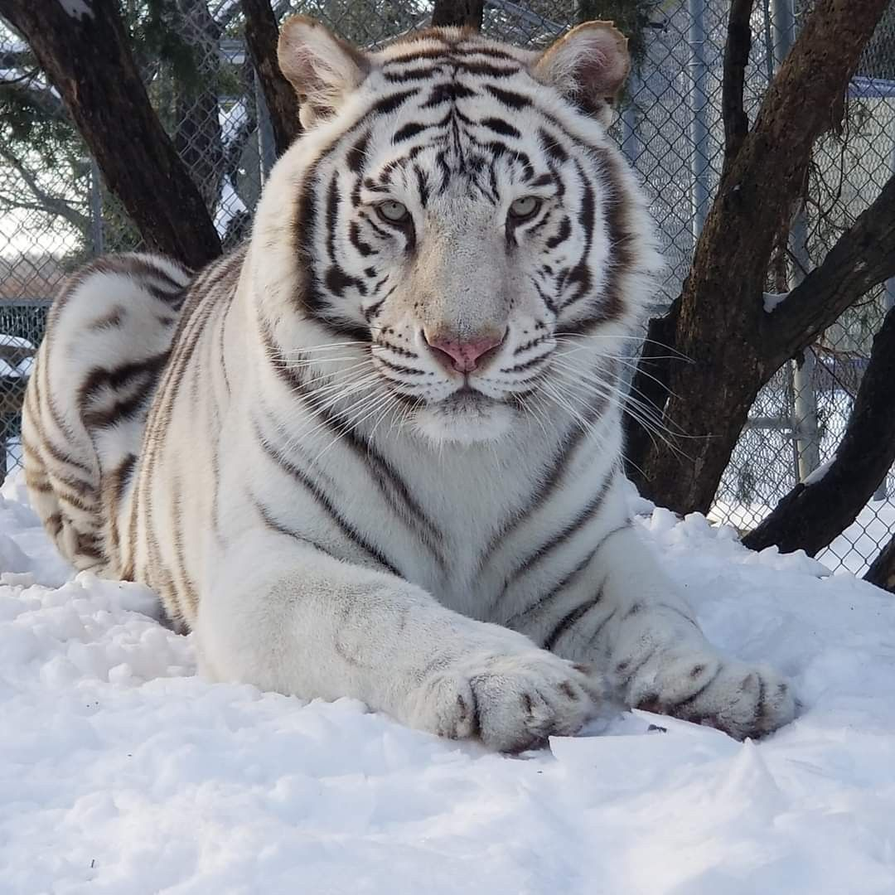
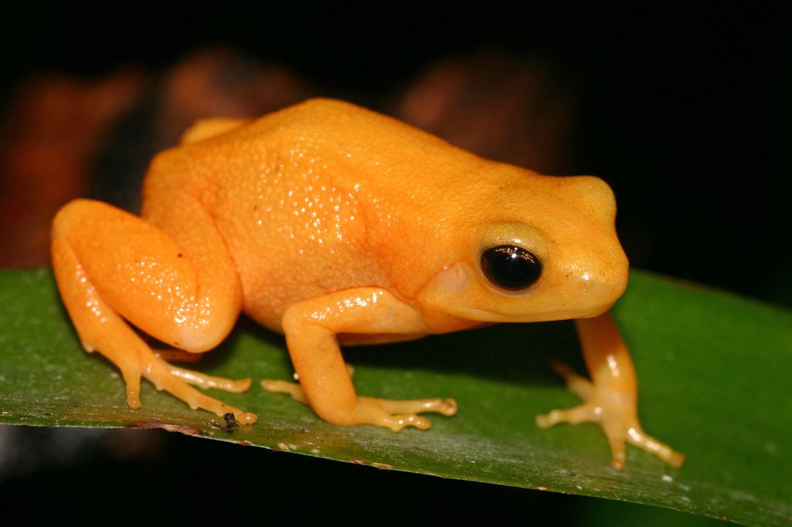

Lamentablemente, estas especies desaparecieron para siempre debido a la destrucción de sus ecosistemas por actividades humanas.

Habitaba en la isla de Java, Indonesia. Su extinción se debió a la quema y tala masiva de los bosques tropicales para convertirlos en terrenos agrícolas y plantaciones.

Vivía en el bosque nuboso de Monteverde, Costa Rica. El calentamiento global provocado por el hombre alteró la humedad de su hábitat, secando las zonas donde se reproducía.